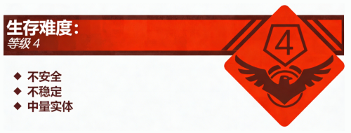
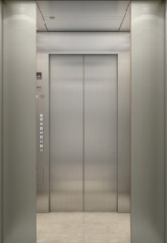

Level 1.5 是 The School Rooms 的一个重要组成部分，它直接连接了学校中的各个重要层级，其作用是供“老师”和“校长”等校务人员便捷地往返于各个层级间。由于本层级的空间过于狭小，并且该层级严格意义上来说应该算是一个物品，这使得 S.M.E.G 花了很长时间考虑是将“电梯”定义为一个 Object 还是 Level。最终，由于该层级对于 The School Rooms 的重要性，Level 1.5 被正式定义为一个子层级。
Level 1.5 的外形十分简单，是一个大小为 4 米× 4 米的轿厢，轿厢顶部安有小型声控灯照明。轿厢壁上有若干个按钮，上面分别刻有编号，按下按钮后，电梯便会开始运行，将你送到对应的楼层。到达对应楼层后，电梯的电动门会打开，若流浪者希望在本楼层下电梯，走出电梯门就能离开本层级。
虽然本层级是一个很好的休整地点，但是“老师”等教务人员经常在此层级出没，加上本层级空间狭小，这导致流浪者想在此层级久留或者建立组织是一件几乎不可能的事情。请流浪者尽量不要进入此层级。
本层的实体较多，多为“老师”和“校长”等教务人员，这些实体会阻止流浪者进入 Level 1.5，如果发现有流浪者想要私自闯入 Level 1.5，会对其进行制裁。在极少数极端情况下“老师”或“校长”会允许流浪者在短时间内进入 Level 1.5。
前文提及到，由于本层级空间狭小，且难以进入，在此层级建立组织是一件几乎不可能的事情。故此层级没有任何已知的基地、前哨和社区。
入口：在 Level 1 和 Level 2 可以轻易发现进入此层级的电动门，但门旁边一般有“执勤队员”把守，无法轻易进入。
出口：原路返回可以返回 Level 1 或 Level 2；坐电梯到达 1 层会来到 Level 1；坐电梯来到大部分楼层都会让你来到 Level 2；坐电梯来到按钮旁边标有“会议室”字样的楼层会来到 Level 7，且回到 Level 1.5 的电动门会快速关上，让流浪者无法原路返回。请流浪者尽量不要试图乘坐电梯来到 Level 7，这是一个极度危险的层级。